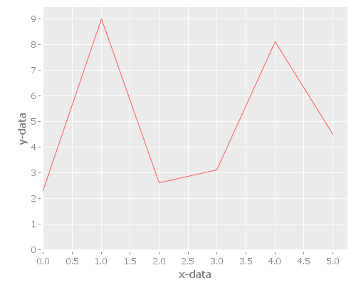

Table of Contents
1 my-app
A Clojure library designed to demonstrate how to setup Java interop using Maven.
1.1 Usage
This is a complete Maven-first Clojure/Java interop application. It details how to create a Maven application, enrich it with clojure code, call into clojure from Java, and hook up the entry points for both Java and Clojure within the same project.
Further, it contains my starter examples of using the fantastic Encanter library in clojure. I include both a pom.xml and a project.clj showing how to pull in the dependencies.
The outcome is a consistent maven-archetyped project, wherein maven and leiningen play nicely together. This allows the best of both ways to be applied together. For the emacs user, I include support for cider and swank. NRepl by itself is present for general purpose use as well.
foobar_12312312_13123123
2 starting a project
2.1 maven first
2.1.1 create mave project
mvn archetype:generate -DgroupId=com.mycompany.app -DartifactId=my-app -DarchetypeArtifactId=maven-archetype-quickstart -DinteractiveMode=false
cd my-app
mvn package
java -cp target/my-app-1.0-SNAPSHOT.jar com.mycompany.app.App
2.1.2 add clojure code
mkdir -p src/main/clojure/com/mycompany/app
create file src/main/clojure/com/mycompany/app/core.clj
(ns com.mycompany.app) (defn main [args] (println "Hello Clojure!") (println "Java main called clojure main with args: " (apply str (interpose " " args))))
2.1.3 add dependencies to your pom.xml
<dependency> <groupId>org.clojure</groupId> <artifactId>clojure</artifactId> <version>1.7.0</version> </dependency> <dependency> <groupId>org.clojure</groupId> <artifactId>clojure-contrib</artifactId> <version>1.2.0</version> </dependency> <dependency> <groupId>incanter</groupId> <artifactId>incanter</artifactId> <version>1.9.0</version> </dependency> <dependency> <groupId>org.clojure</groupId> <artifactId>tools.nrepl</artifactId> <version>0.2.10</version> </dependency> <dependency> <groupId>swank-clojure</groupId> <artifactId>swank-clojure</artifactId> <version>1.4.3</version> </dependency>
modify App.java to run this function like this.
2.1.4 main changes
package com.mycompany.app; // clojure api import clojure.lang.IFn; import clojure.java.api.Clojure; // for my api import clojure.lang.RT; public class App { public static void main( String[] args ) { System.out.println("Hello Java!" ); try { // running my clojure code RT.loadResourceScript("com/mycompany/app/core.clj"); IFn main = RT.var("com.mycompany.app.core", "main"); main.invoke(args); // running the clojure api IFn plus = Clojure.var("clojure.core", "+"); System.out.println(plus.invoke(1, 2).toString()); } catch(Exception e) { e.printStackTrace(); } } }
2.1.5 maven plugins for building
You should add in these plugins to get a complete jar:
- add the maven-assembly-plugin
<plugin> <artifactId>maven-assembly-plugin</artifactId> <configuration> <descriptorRefs> <descriptorRef>jar-with-dependencies</descriptorRef> </descriptorRefs> <archive> <manifest> <!-- use clojure main --> <!-- <mainClass>com.mycompany.app.core</mainClass> --> <!-- use java main --> <mainClass>com.mycompany.app.App</mainClass> </manifest> </archive> </configuration> <executions> <execution> <id>make-assembly</id> <phase>package</phase> <goals> <goal>single</goal> </goals> </execution> </executions> </plugin>
- add the clojure-maven-plugin
<plugin> <groupId>com.theoryinpractise</groupId> <artifactId>clojure-maven-plugin</artifactId> <version>1.7.1</version> <configuration> <mainClass>com.mycompany.app.core</mainClass> </configuration> <executions> <execution> <id>compile-clojure</id> <phase>compile</phase> <goals> <goal>compile</goal> </goals> </execution> <execution> <id>test-clojure</id> <phase>test</phase> <goals> <goal>test</goal> </goals> </execution> </executions> </plugin>
- add the maven-compiler-plugin
<plugin> <groupId>org.apache.maven.plugins</groupId> <artifactId>maven-compiler-plugin</artifactId> <version>3.3</version> <configuration> <source>1.8</source> <target>1.8</target> </configuration> </plugin>
- add the maven-exec-plugin
<plugin> <groupId>org.codehaus.mojo</groupId> <artifactId>exec-maven-plugin</artifactId> <version>1.4.0</version> <executions> <execution> <goals> <goal>exec</goal> </goals> </execution> </executions> <configuration> <mainClass>com.mycompany.app.App</mainClass> </configuration> </plugin>
- add the maven-jar-plugin
<plugin> <groupId>org.apache.maven.plugins</groupId> <artifactId>maven-jar-plugin</artifactId> <version>2.6</version> <configuration> <archive> <manifest> <!-- use clojure main --> <!-- <mainClass>com.mycompany.app.core</mainClass> --> <!-- use java main --> <!-- <mainClass>com.mycompany.app.App</mainClass> --> </manifest> </archive> </configuration> </plugin>
2.1.6 using maven
- bulding
mvn package
- run from cli with
- run from java entry point:
java -cp target/my-app-1.0-SNAPSHOT-jar-with-dependencies.jar com.mycompany.app.App
- run from clojure entry point:
java -cp target/my-app-1.0-SNAPSHOT-jar-with-dependencies.jar com.mycompany.app.core
- run with entry point specified in uberjar MANIFEST.MF:
java -jar target/my-app-1.0-SNAPSHOT-jar-with-dependencies.jar
- run from java entry point:
- run from maven-exec-plugin
- run with maven-clojure-plugin
- clojure main
mvn clojure:run
- clojure test
- add a test
in order to be consistent with the test location convention in maven, create a path like this:
src/test/clojure/com/mycompany/app
put a file in there called:
core_test.cljadd the following content:
(ns com.mycompany.app.core-test (:require [clojure.test :refer :all] [com.mycompany.app.core :refer :all])) (deftest a-test (testing "Rigourous Test :-)" (is (= 0 0))))
- add a test
- test
mvn clojure:test
or
mvn clojure:test-with-junit
- available clojure commands
clojure:add-source clojure:add-test-source clojure:compile clojure:test clojure:test-with-junit clojure:run clojure:repl clojure:nrepl clojure:swank clojure:nailgun clojure:gendoc clojure:autodoc clojure:marginalia
see documentation:
- clojure main
- run from cli with
2.1.7 add leiningen support
- create project.clj
(defproject my-sandbox "1.0-SNAPSHOT" :description "My Encanter Project" :url "http://joelholder.com" :license {:name "Eclipse Public License" :url "http://www.eclipse.org/legal/epl-v10.html"} :dependencies [[org.clojure/clojure "1.7.0"] [incanter "1.9.0"]] :main com.mycompany.app.core :source-paths ["src/main/clojure"] :java-source-paths ["src/main/java"] :test-paths ["src/test/clojure"] :resource-paths ["resources"] :aot :all)
- run with leiningen
lein run
- test with leiningen
lein test
3 running with org-babel
3.1 clojure code
(-main) (run)
Hello Clojure! Java main called clojure function with args:
3.2 playing with encanter
(use '(incanter core charts pdf)) ;;; Create the x and y data: (def x-data [0.0 1.0 2.0 3.0 4.0 5.0]) (def y-data [2.3 9.0 2.6 3.1 8.1 4.5]) (def xy-line (xy-plot x-data y-data)) (view xy-line) (save-pdf xy-line "img/incanter-xy-line.pdf") (save xy-line "img/incanter-xy-line.png")
3.3 PNG

3.4 PDF
4 resources
4.1 org-babel clojure
4.2 org-scraps
4.3 project setup
4.4 vinyasa
READ this to give your clojure workflow more flow